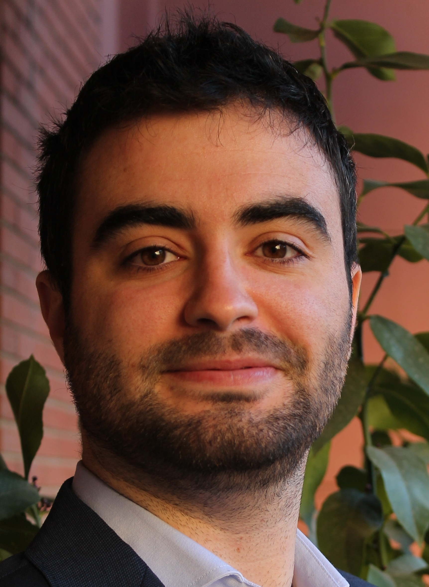
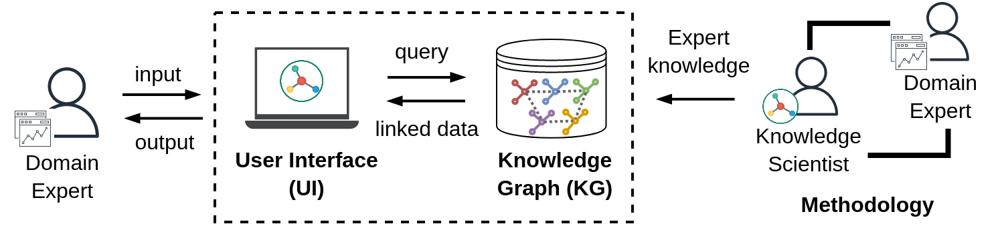

Albert Navarro-Gallinad
I am a PhD researcher in Computer Science at ADAPT centre
in Trinity College Dublin.
My research interests lie in making Knowledge Graph technologies (Artificial Intelligence) usable for domain experts.
I have PhD-level experience in developing expert systems to address complex data challenges in the healthcare for researchers across Europe.
In my free time, I like reading sci-fy or scientific dissemination books that explain complex topics
using simple language and visualisations. I am also quite active in sports as Iike playing basketball,
doing aikido and running as an excuse to visit beautiful places. I also really enjoy travelling and learning
from new cultures which I try to do at least once a year.

Professional Profile
A PhD student in Computer Science specialized in facilitating the linkage between health and environmental data and the publication of research data as open as possible for researchers using Semantic Web.Research interests
My principal research interests lie in the data aspects (suitability, analysis, retrieval) to support the areas of study regarding the environmental effects on human health.Skills
Knowledge Graphs: applied to Big Data, W3C standards, data integration, knowledge discovery.Data preprocessing and statistical analysis: environmental (satellite and measurement stations) and clinical data (longitudinal patient records and epidemiological data)Web app developer: analytical platforms with R Shiny and Python Dash.FAIR principles: making research data Findable, Accessible, Interoperable and Reusable (FAIR).Data sharing and publication: making data compliant with data policies and regulations at a European level.Data-driven reports: Markdown, Jupyter notebooks and HTML templates.Linux: knowledge in the operating system.
Work in progress...

Projects
HELICAL
Data Science challenge in rare autoimmune diseases (2019-2023)
AVERT
Impact of environmental factors and flare prediction in ANCA vasculitis (2018-2022)
WINDBIOME
Aerial micro-biome diversity and their role in Kawasaki disease (2016-2018)
Publications
- Navarro-Gallinad, Albert, Fabrizio Orlandi, Jennifer Scott, Mark Little and Declan O'Sullivan.
Evaluating the usability of a semantic environmental health data framework: approach and study.
Semantic Web Journal. 2022.
Top Web Journal Article[Publication] [PDF] - Scott, Jennifer, Enock Havyarimana, Albert Navarro-Gallinad, et al.
The association between ambient UVB dose and ANCA-associated vasculitis relapse and onset.
Arthritis Res Ther 24, 147 (2022).
Journal Article[Publication] [PDF] - Albert Navarro-Gallinad, Maria Christofidou, Solange Gonzalez Chiappe, Nathan Lea, Dipak Kalra,
Fabrizio Orlandi and Declan O’Sullivan. Rare diseases: making environmental health studies’ data as
open as possible. The 20th International Vasculitis and ANCA Workshop. 2022.
Poster Abstract[Conference] [Publication] [PDF] - Albert Navarro-Gallinad, Maria Christofidou, Fabrizio Orlandi, Nathan Lea, Dipak Kalra and Declan O’Sullivan.
Support for publishing environmental health data as open as possible. The Marie Curie Anual Conference (MCAA).
2022.
Poster Abstract[Conference] [Publication] [PDF] - Navarro-Gallinad, Albert, Fabrizio Orlandi, and Declan O'Sullivan.
Enhancing Rare Disease Research with Semantic Integration of Environmental and Health Data.
The 10th International Joint Conference on Knowledge Graphs. 2021.
Best conference paper nomination[Publication] [PDF] - Navarro-Gallinad, Albert, Fabrizio Orlandi, Dipak Kalra, Xavier Rodó, Mark Little and Declan O’Sullivan.
Rare disease: it’s all about combining data. The Marie Curie Anual Conference (MCAA). 2021.
Poster Abstract[Conference] [Publication] [PDF] - Navarro-Gallinad, Albert, Alan Meehan, and Declan O'Sullivan.
The Semantic Combining for Exploration of Environmental and Disease Data Dashboard for Clinician Researchers.
VOILA@ ISWC. 2020.
Premier Workshop[Publication] [PDF] - Xavier Rodó, Albert Navarro-Gallinad, Tomoko Kojima, Joan Ballester and Sílvia Borràs.
Sub-weekly cycle uncovers the hidden link of aerosols and their composition to Kawasaki disease.
First European Congress on Kawasaki Disease (EUROKIDS). 2021.
Oral Presentation[Conference] - Xavier Rodó, Albert Navarro-Gallinad, Tomoko Kojima, Joan Ballester and Sílvia Borràs.
Particulate matter dynamics and chemistry drive Kawasaki disease epidemiology in Japan.
The 10th International Conference on Children’s Health and the Environment (INCHES). 2020.
Oral Presentation[Conference] - Ballester, J., Borràs, S., Curcoll, R., Navarro-Gallinad, A., Pozdniakova, S., Cañas, L., Burns, J.C. and Rodó, X.
On the interpretation of the atmospheric mechanism transporting the environmental trigger of Kawasaki Disease.
PloS one 14.12 (2019)
Formal comment[Publication] [PDF] - Albert Navarro-Gallinad. Conference Speaker in the Nanoscience and Nanotechnology gathering
in Spain with the intention to popularize this discipline with public engaging activities to students.
10 a la menos 9. (2018)
Speaker[Conference]
2022
2021
2020
2019
2018
...
© 2022 - Copyright: Albert Navarro-Gallinad (Last update: December 2022)